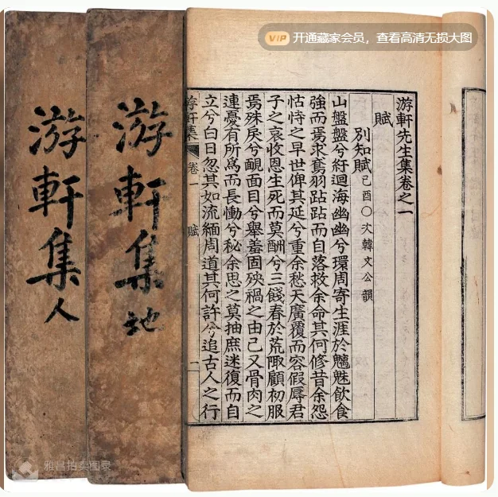

 点击图片可查看大图 · 原始图像 626×625 px 流拍 游轩先生集四卷附录一卷年谱一卷 朝鲜·丁熿撰 丁熿 · 自查：1821-1851 成交记录流拍 估价RMB 8,000 记录信息 拍卖日期2009-06-21 13:30 拍卖公司上海国拍 拍卖专场2009春季艺术品古籍拍卖会 上海国拍 创作年代自查：1821-1851 · 1821年 开本30.6×19.1cm 尺寸类型开本 高 × 宽30.6 × 19.1 cm 纸张原表未著录 成交价原文无成交价（流拍） 来源位置Excel 第 46 行